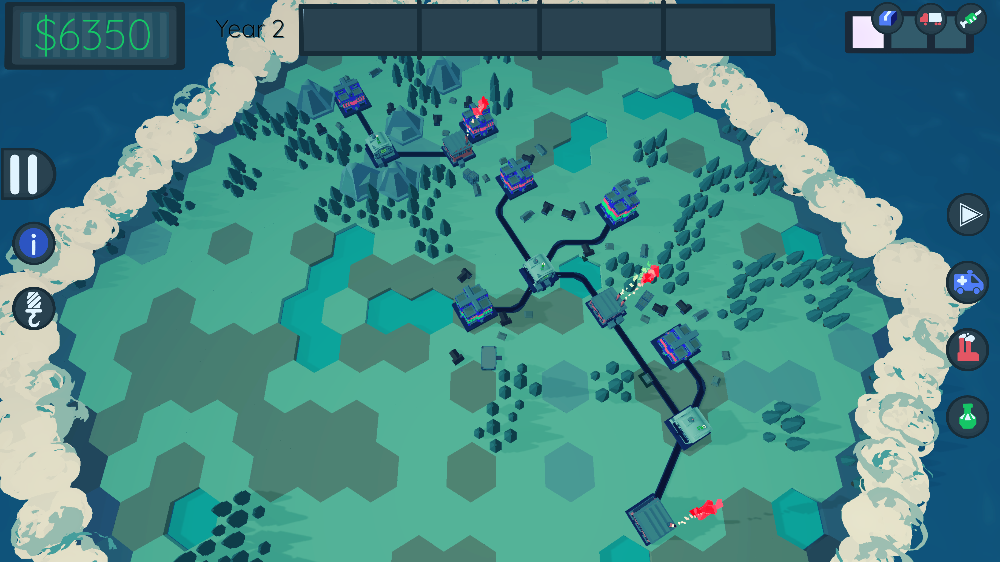
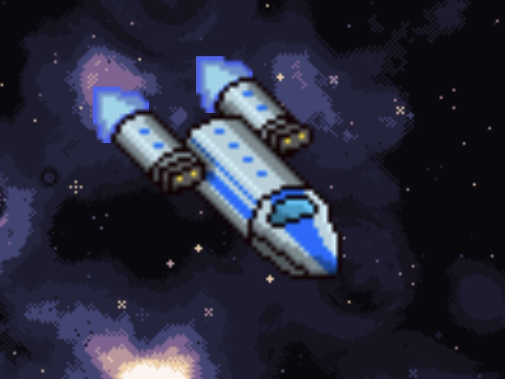
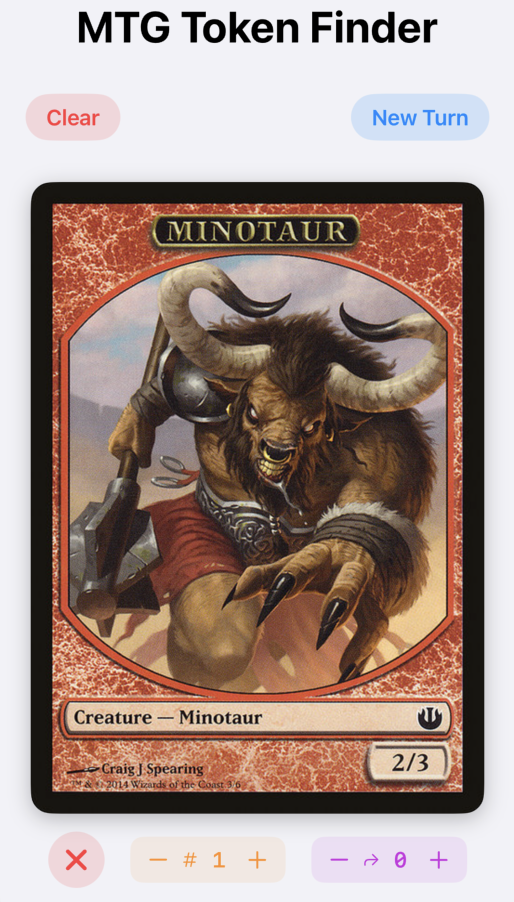
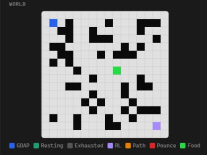
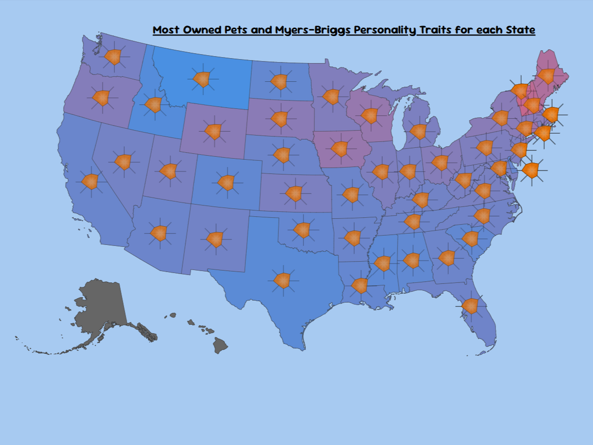

June 5, 2026
Realism in Game Design: Making Mechanics that Reflect Reality
While working on Pharmini, I designed a mechanic that felt to gamey for the game's realistic vision. I explore how I solved this issue and the place of realism in games.
Portfolio — 2026
Hello! I'm Rowan, and welcome to my portfolio. Here you'll find a selection of my work in game design and software engineering, along with some thoughts on design, development, and the creative process.
01 — Game Design
Projects I'm working on and completed in game design.
02 — Software Eng.
Software engineering projects I've worked on.
03 — Blog
A log of things I've learned designing or thoughts on games I'm playing.
Game Design
A selection of games I've designed and developed.
Pharmini is a real-time strategy resource management game designed to inspire interest in industrial engineering. Players build and upgrade labs and factories to support hospitals by producing and shipping materials. Throughout the game,
the player must allocate their money effectively as the map expands, more hospitals open, and new materials are unlocked.
I joined this project for a short time in the summer of 2024 to advise on the game's design as it was first transitioned from a physical prototype to a digital version being built in Godot, and I became the main designer on the project in
the spring of 2025. In my year working on the project, I designed and reworked many of the game's core mechanics in order to improve game feel and player experience. I designed the system allowing labs to send orders to one another, wrote
the script for the game's tutorial, created the game's fog-of-war system, scripted questions for the game's choice system, and tuned the money balance with additional mechanics like operational building costs and increasing building costs.
While working on Pharmini, I have run and participated in weekly playtests of the most recent build with the team, and I have learned how to effectively communicate design decisions and changes to the team. The game will soon be launched on
mobile platforms and can currently be played in a web browser or on PC. The game is being developed by a small team of students at Arizona State University for a research project, and I am proud to be a part of it.
You can find my design work on the project here.

Wayfinder is a tamagotchi-like spaceship idle game being developed in SwiftUI and SpriteKit. Players are given a spaceship that they can upgrade and send on missions to explore the galaxy. While their ship is on a journey, the player can see
their ship in an iOS widget that can be added to the home screen. Players will earn credits for completing missions and simultaneously accrue risk. Eventually, the ship will be destroyed once it's risk becomes too high, and the player will be
given a new ship to explore with. Each ship has unique stats, design, and specialities.
Wayfinder is a solo project I have been working on since April of 2026. The core loop of the game is in place, but the game is still actively being developed. Major designs within the core loop include the credit and risk systems, the ship
upgrade system, and the mission system. For this game I also learned to do rudementary pixel art in order to create isometric ship designs as well as menu and background graphics. The game also uses procedural generation tools developed by
Deep-Fold for the planets and backgrounds in the game. Check those out here and here.
In the future, I plan to add more ships and better systems for long-term replayability and progression. This app will be released on the App Store once it is complete, and I will be sure to update this portfolio with a link to the app when it
is available.

In Omnidelver, you are an adventurer looking to make a name for yourself. In this quest, you have decided to explore a dangerous dungeon, looking for Loot Monsters to earn money and gain fame. Deadly traps litter the dungeon, so be on your
guard! You will sell the loot that you collect to purchase better equipment and useful items to aid in your exploration, allowing you to reach greater depths.
Omnidelver is a tabletop dungeon crawling card game that I designed and developed in the spring of 2024 for a game design class at Arizona State University. The game is designed to be played with 2-4 players with multiple win conditions being
present within the game such as collecting a lot of loot, killing a lot of monsters, or exploring the entire dungeon. The main mechanic I was most proud of was the combat system, which utilized a d6 and d8 when rolling for combat and allowed
players to use either dice for attack or defense, creating dynamic and strategic fighting scenarios.
While the game is complete and playable, it share a lot of similarities to other dungeon crawling tabletop games like Munchkin and Hero Quest while in turn not being finely tuned for a balanced game and a professional release. Regardless, I learned
a lot about game design iterating on and playtesting this game, and the lessons I learned while developing it have influenced my design decisions in other projects since.

Software Engineering
A selection of software and websites I've created.
There are over 400 token created by the over 29000 cards printed for Magic: The Gathering since 1993. Finding tokens that match cards printed ten or twenty years ago can be difficult or expensive. MTG Token Finder is an app that allows
players to digitally track their tokens in games and for their decks. Players can scan their cards using their phone's camera, and the picture will be processed using the iOS Vision framework to identify the card. The card's name is then
used to query the Scryfall database for the card's associated tokens, which are then displayed to the user. Furthermore, a set of tokens can be saved and associated with a player's deck, allowing them to quickly find and load the tokens they
need for their games. The app features a screen to allow tokens to be tracked including how many of each token the player has and how many have been used during the turn, along with control to clear the gallery view or start a new turn.
I am currently developing this app as an applied project to complete my Master's in Robotics and Autonomous Systems at Arizona State University. The app is being developed using SwiftUI and uses the Scryfall APIs to query the card database.
I strive to build software that I would use myself, and as a long-time Magic: The Gathering player, I know this is something I will use and that other players will find useful. When I complete the app, I will add a link to the app here so
you can download it and test it yourself!

To learn about planning algorithms for a course final project, I developed a pursuit evasion simulation where a Goal-Oriented Action Planner (GOAP) works as the Pursuer against a reinforcement learning agent that acts as the Evader. The RL agent learns to evade the GOAP agent for 250 moves in a discrete 16-by-16 2D grid. This simulation also features modules to change the actions the pursuer can take, how the training works for the evader, and how the environment is initialized. The simulation was developed in HTML. The most rewarding part of this project was tuning the reinforcement learning agent's reward function. The biggest improvement was to reward the evader for maintaining a safe distance from the GOAP agent without being too far away, which allowed for the emergence of kiting behavior. A link to a paper I wrote about this can be found here. Test is yourself with the link below!

I worked with a group of students in my computer visualization class to create a scrollytelling story using D3 for our final project. The topic of the story was whether cats or dogs were the better pet by any metric, and we used real data to create visualizations to present each animal's case. The best visualization I created was a combinatorial visualization that showed the most-owned pets in each state and correlated these with Myers-Briggs personality type data by state shown on a radar chart (pictured right). This project gave me a lot of practice reading and debugging other developers work, especially because some of the team members needed to focus on other projects or travel towards the end of the semester. This was a fun project with a light-hearted topic, and it allowed me to work with and visualize data, one of my favorite development tasks. You can read a report I wrote on this project here.

Blog
Articles expressing my thoughts on games, game design, and software engineering.
June 5, 2026
While working on Pharmini, I designed a mechanic that felt to gamey for the game's realistic vision. I explore how I solved this issue and the place of realism in games.
May 29, 2026
I made a meta guide for a friend preparing for the Riftbound Regional Qualifier in Vancouver.
About
I'm a game designer and software engineer. When making games, I focus on game feel and player experience when designing games while crafting unique mechanics and developing interesting systems for them. In my free time, I'm always looking for new games to study and play. In turn, my education at Arizona State University has made me a competent software engineer, allowing me to develop the games I design and good software.
Games have been my passion for my whole life; they are how I developed relationships throughout my childhood and what I studied every day to develop strategies and understand their design. I particularly enjoy trading card games, but I have played every kind of game I can find. My interest in video games drew me to study Computer Science, and I have been learning to develop software and formally studying game design since then.
I'm currently the game designer for Pharmini, a real-time strategy resource management game meant to inspire interest in industrial engineering, and I am working on a solo project called Wayfinder, a tamagotchi-like spaceship idle game. I play Riftbound, the League of Legends trading card game, competitively since its release, and I am currently studying classic tabletop games such as Dominoes and Cribbage to understand their design and mechanics. I am completing my Master's in Robotics and Autonomous Systems at Arizona State University, and I am looking for opportunities to work in game design or software engineering after graduation.
Tools & Technologies